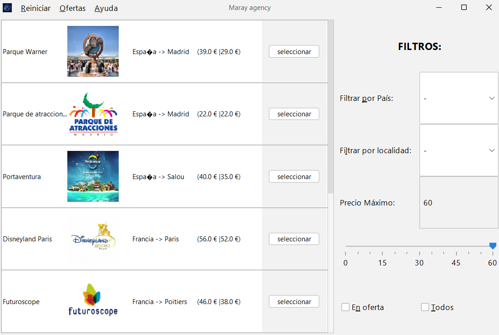

Explorar Parques Tematicos

Desde la pantalla principal, utilice los botones superiores para navegar
entre las secciones de parques y alojamientos. También puede cambiar el
idioma de la interfaz en cualquier momento.
Opciones de Filtrados
- País y Localidad: Seleccione una ubicación específica para ver los parques en esa zona.
- Precio Máximo: Ajuste el deslizador para establecer un límite de presupuesto para las entradas.
- Sólo Ofertas: Marque esta casilla para ver únicamente el parque que tiene descuento activo.
- Todo: pulsa aqui para reiniciar todos los filtros y moswtrar así todos los parque